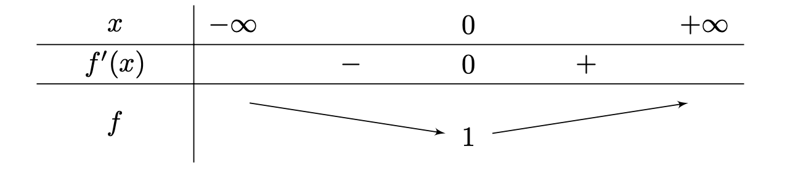

Fonction Exponentielle
Théorème
Il existe une unique fonction \( f \) dérivable sur \( \mathbb{R} \) telle que :
$$ \forall\ x\ \in \ \mathbb{R}:\ f^{\prime }\left( x\right) =f\left( x\right) \ et\ f\left( 0\right) =1 $$Définition
La fonction \( f \) dérivable sur \( \mathbb{R} \) telle que \( f^{\prime} = f\ et\ f(0) = 1\) est appelée fonction exponentielle. On la note \( \exp \).
Théorème
La fonction \( f \) définie par \( f(x) = \exp(u(x)) \) est dérivable sur \( I \) et pour tout \( x \in I \):
$$f^{\prime }\left( x\right) =u^{\prime }\left( x\right) \cdot \exp \left( u\left( x\right) \right) $$Théorème
Pour tout réel \( a \) et tout réel \( b \),
$$\exp \left( a+b\right) =\exp \left( a\right) \cdot \exp \left( b\right) $$Démonstration
On fixe le réel \( a\) et on introduit la fonction \( h\) définie sur \( \mathbb{R} \) par:
$$h=\frac{\exp \left( x+a\right) }{\exp \left( a\right) } $$La fonction \( h\) est dérivable sur \( \mathbb{R} \) et \( \forall x \in \mathbb{R} \)
$$h^{\prime }\left( x\right) = \left( \frac{\exp \left( x+a\right) }{\exp \left( a\right) } \right)^{\prime } $$ $$=\frac{1}{\exp \left( a\right) } \cdot \left( \exp \right)^{\prime } \left( x+a\right) $$ $$=\frac{1}{\exp \left( a\right) } \cdot \left( x+a\right)^{\prime } \cdot \exp \left( x+a\right) $$ $$=\frac{1}{\exp \left( a\right) } \cdot 1\cdot \exp \left( x+a\right) $$ $$=\frac{\exp \left( x+a\right) }{\exp \left( a\right) } $$ $$ = h^{\prime}(x)$$
De plus: \( h\left( 0\right) =\frac{\exp \left( 0+a\right) }{\exp \left(
a\right) } =\frac{\exp \left( a\right) }{\exp \left( a\right) } =1 \)
La fonction \( h \) est telle que \( h^{\prime} = h \) et \( h(0) = 1 \)
: il s'agit donc de la fonction exponentielle.
Ainsi, pour tout réel \( x \) :
Avec \( \mid \cdot \exp(a) \neq 0 \)
$$\Leftrightarrow \exp \left( x+a\right) =\exp \left( x\right) \cdot \exp \left( a\right) $$Pour \( x = b \), on obtient:
$$\Leftrightarrow \exp \left( a+b\right) =\exp \left( a\right) \cdot \exp \left( b\right) $$cqfd
Théorème
\( \forall a,\ b \in \mathbb{R} \):
$$\exp \left( -a\right) =\frac{1}{\exp \left( a\right) } \ et\ \exp \left( a-b\right) =\frac{\exp \left( a\right) }{\exp \left( b\right) } $$Démonstration
On sait que: \( \forall a,\ b \in \mathbb{R} \) : \( \exp \left(
a+b\right) =\exp \left( a\right) \cdot \exp \left( b\right)\ (1) \)
1 Pour \( b = -a \), on obtient :
2) On a:
$$\exp \left( a-b\right) =\exp \left[ a+\left( -b\right) \right] $$Par (1):
$$=\exp \left( a\right) \cdot \exp \left( -b\right) $$Par (2):
$$=\exp \left( a\right) \cdot \frac{1}{\exp \left( b\right) } $$ $$=\frac{\exp \left( a\right) }{\exp \left( b\right) } $$cqfd
Théorème
\( \forall a \in \mathbb{R} \):
$$ \exp \left( \frac{a}{2} \right) =\sqrt{\exp \left( a\right) } $$Théorème
\( \forall x \in \mathbb{R} \) et \( \forall n \in \mathbb{N} \)
$$\exp \left( n\cdot x\right) =\left[ \exp \left( x\right) \right]^{n} $$Démonstration
Montrons d'abord par récurrence que la formule est vraie pour tout entier naturel \( n \) de \( \mathbb{N} \).
$$ \mathscr{P}(x) : \exp \left( n\cdot x\right) =\left[ \exp \left( x\right) \right]^{n} $$
Initialisation:
\( \mathscr{P}(0) \) est vraie.
En effet \( \exp \left( 0\cdot x\right) =\exp \left( 0\right) =1\ \) et
\( \left[ \exp \left( x\right) \right]^{0} =1 \)
Hérédité:
Supposons que l'on ait \( \mathscr{P}(n) \).
Alors on aurait:
par l'hypothèse de récurrence
$$ =\exp \left[ \left( x\right) \right]^{n} \cdot \exp \left( x\right) $$ $$ =\exp \left[ \left( x\right) \right]^{n+1} $$
Donc \( \mathscr{P}(n+1) \) est vraie.
Conclusion:
\( \forall n \in \mathbb{N} \) : \( \exp \left( nx\right) =\left[ \exp
\left( x\right) \right]^{n} \)
Par ailleurs,
La formule est donc vraie pour tout entier relatif.
cqfd
Notation
$$ e = \exp(1)$$\( e \) est appelé nombre exponentiel, nombre d'Euler ou constante de Néper.
$$ e \simeq 2.71828 $$ $$ \forall x \in \mathbb{R} : \exp (x) = e^x$$Conventions
$$ e^0 = 1 $$ $$ e^1 = e $$\( \forall a,\ b \in \mathbb{R} \):
$$ e^{a+b} = e^a \cdot e^b $$ $$e^{-a} = \frac{1}{e^a} $$ $$e^{a-b} = \frac{e^a}{e^b} $$ $$e^{\frac{a}{2}} = \sqrt{e^a} $$\( \forall x \in \mathbb{R} \) et \( \forall n \in \mathbb{Z} \) :
$$\left( e^{x}\right)^{n} =e^{nx}$$\( \forall x \in \mathbb{R} \):
$$\left( e^{x}\right)^{\prime} =e^{x}$$Si \( u \) est une fonction dérivable sur un intervalle \( I \), alors \( \forall x \in I \):
$$\left( e^{u\left( x\right) }\right)^{\prime } =u^{\prime }\left( x\right) \cdot e^{u\left( x\right) }$$Variations
Théorème
\( \forall x \in \mathbb{R} \):
$$e^{x}>0$$Théorème
La fonction exponentielle est strictement croissante sur \( \mathbb{R} \).
Conséquences
\( \forall a, \ b \in \mathbb{R} \):
Comme \( \exp \) est strictement croissante sur \( \mathbb{R} \)
$$e^{a}=e^{b}\Leftrightarrow a=b$$Comme \( \exp \) est strictement croissante sur \( \mathbb{R} \)
$$e^{a} < e^{b} \Leftrightarrow a < b$$Théorème
$$ \lim_{x\rightarrow +\infty } e^{x}=+\infty $$ $$\lim_{x\rightarrow -\infty } e^{x}=0$$Démonstration
Démontrons que \( \lim_{x\rightarrow +\infty } e^{x}=+\infty \) en
comparant \( e^x \) à \( x \).
Pour cela, étudions la fonction différence \( f \) définie sur \(
\mathbb{R} \) par:
\( f \) est dérivable sur \( \mathbb{R} \) et \( \forall x \in \mathbb{R} \)
$$f^{\prime }\left( x\right) =e^{x}-1$$ $$f^{\prime }\left( x\right) >0\Leftrightarrow e^{x}-1>0$$ $$\Leftrightarrow e^{x}>1$$ $$\Leftrightarrow e^{x}>e^{0}$$ $$\Leftrightarrow x>0$$Comme \( \exp \) est strictement croissante sur \( \mathbb{R} \)
$$f^{\prime }\left( x\right) =0\Leftrightarrow x=0$$On obtient donc le tableau de variations suivant:
\( f \) sur \( \mathbb{R} \) le nombre 1 comme minimum et \( \forall x \in \mathbb{R} \)
$$f\left( x\right) \geqslant 1$$Donc, \( \forall x \in \mathbb{R} \):
$$f\left( x\right) >0\Leftrightarrow e^{x}-x>0\ $$ $$\Leftrightarrow e^{x}>x\ $$Or, \( \lim_{x\rightarrow +\infty } e^{x}=+\infty \), donc par le théorème de comparaison, on a:
$$\lim_{x\rightarrow +\infty } e^{x}=+\infty $$
cqfd
Démontrons que \( \lim_{x\rightarrow -\infty } e^{x}=0 \)
Posons \( t=-x \Leftrightarrow x = -t \)
Si \( x \rightarrow - \infty \), \( t \rightarrow + \infty \)
Donc,
cqfd
Courbe représentative
Théorème
$$\lim_{x\rightarrow 0} \frac{e^x - 1}{x} =1$$Démonstration
$$\lim_{x\rightarrow 0} \frac{e^x - 1}{x} = \lim_{x\rightarrow 0} \frac{e^x - e^0}{x - 0}$$ $$ = \lim_{x\rightarrow 0} \frac{\exp(x) - \exp(0)}{x - 0} $$par définition de la dérivabilité de exp en 0
$$ = (\exp)^{ \prime } (0)$$ $$ = \exp (0)$$ $$ = 1$$Croissance comparée
Théorème
$$ \lim_{x\rightarrow +\infty } \frac{e^x}{x} = +\infty$$ $$ \lim_{x\rightarrow -\infty } xe^x = 0$$Démonstration 1
Démontrons que \( \lim_{x\rightarrow +\infty } \frac{e^x}{x} = +\infty
\) en comparant \( e^x \) à \( \frac{x^2}{2} \)
Pour cela, étudions la fonction différence \( f \) définie sur \(
\mathbb{R} \) par :
\( f \) est dérivable sur \( \mathbb{R} \) et \( \forall x \in \mathbb{R} \) :
$$ f^{\prime}(x) = e^x - x $$\( f^{\prime} \) est dérivable sur \( \mathbb{R} \) et \( \forall x \in \mathbb{R} \) :
$$ f^{\prime \prime}(x) = \ $$Or:
$$ f^{\prime \prime}(x) > 0 \Leftrightarrow e^x - 1 > 0$$ $$\Leftrightarrow e^x > 1$$ $$\Leftrightarrow e^x > e^0$$ $$\Leftrightarrow x > 0$$Comme la fonction \( \exp \) est strictement croissante sur \( \mathbb{R} \)
$$ f^{\prime \prime}(x) = 0 \Leftrightarrow x = 0$$On obtient donc le tableau de variations suivant (pour la fonction \( f^{\prime} \) ):

\( f^{\prime} \) admet sur \( \mathbb{R} \) le nombre 1 comme minimum et \( \forall x \in \mathbb{R} \) :
$$ f^{\prime}(x) \geqslant 1 $$Donc, \( \forall x \in \mathbb{R} \):
$$ f^{\prime}(x) > 0 $$On obtient alors le tableau de variations pour la fonction \( f \)

Ainsi, \( \forall x \in \mathbb{R}^*_+ \)
$$ f^{\prime}(x) > 1 $$Donc, \( \forall x \in \mathbb{R}^*_+ \)
$$ f^{\prime}(x) > 0 \Leftrightarrow e^x - \frac{x^2}{2} > 0$$ $$ \Leftrightarrow e^x > \frac{x^2}{2} $$ $$ \Leftrightarrow \frac{e^x}{x} > \frac{x}{2} $$Or, \( \lim_{x\rightarrow +\infty } \frac{x}{2} = +\infty \), donc par le théorème de comparaison, on a :
$$ \lim_{x\rightarrow +\infty } \frac{e^x}{x} = +\infty$$Démonstration 2
Démontrons que:
$$ \lim_{x\rightarrow -\infty } xe^x = 0$$
Posons \( t = -x \Leftrightarrow x = -t\)
Si \( x \rightarrow -\infty \), alors \( t \rightarrow +\infty \)
Donc :
Théorème
$$ \lim_{x\rightarrow +\infty } \frac{x}{e^x} = 0$$Théorème
\( \forall x \in \mathbb{N}^* \):
$$ \lim_{x\rightarrow +\infty } \frac{e^x}{x^n} = +\infty$$ $$ \lim_{x\rightarrow -\infty } x^ne^x = 0$$Démonstration 1
Démontrons que:
$$ \lim_{x\rightarrow -\infty } x^ne^x = 0$$
Posons \( t = \frac{x}{n} \Leftrightarrow x = t \cdot n\)
Si \( x \rightarrow +\infty \), alors \( t \rightarrow +\infty \), car
\( n \geqslant 1 \)
Donc :
Démonstration 2
Posons $t=-x \Leftrightarrow x = -t$;
lorsque $x \rightarrow - \infty$ alors $t \rightarrow + \infty$
-
Si $n$ est pair:
$$ \lim_{x \rightarrow - \infty} x^n \cdot e^x = \lim_{t \rightarrow + \infty} (-t)^n \cdot e^{-t}$$ $$= \lim_{t \rightarrow + \infty} \frac{t^n}{e^t}$$ $$= \lim_{t \rightarrow + \infty} \frac{1}{\underbrace{\frac{t^n}{e^t}}_{\rightarrow + \infty}}$$ $$ = 0$$ -
Si $n$ est impair:
$$ \lim_{x \rightarrow - \infty} x^n \cdot e^x = \lim_{t \rightarrow + \infty} (-t)^n \cdot e^{-t}$$ $$= \lim_{t \rightarrow + \infty} \frac{-t^n}{e^t}$$ $$= \lim_{t \rightarrow + \infty} \frac{-1}{\underbrace{\frac{t^n}{e^t}}_{\rightarrow + \infty}}$$ $$ = 0$$